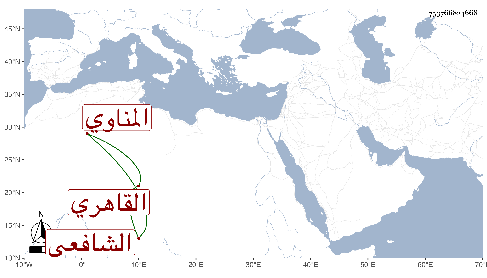

0902Sakhawi.DawLamic.ITO20230111-ara1.EIS1600.753766824668
Biography ID: 753766824668
370
محمد بن علي بن إبراهيم بن إسمعيل بن محمد الشمس المناوي ثم القاهري الشافعي أخو أحمد وإبراهيم الماضيين وهذا الأكبر ويعرف بالشويهد بضم المعجمة وآخره مهملة مصغر . حفظ القرآن وجلس مع الشهود وتنزل في بعض الجهات كسعيد السعداء والسابقية . ومات بعد أن شاخ وصار يرغب عما بيده شيئا فشيئا قبل السبعين فيما أظن .
